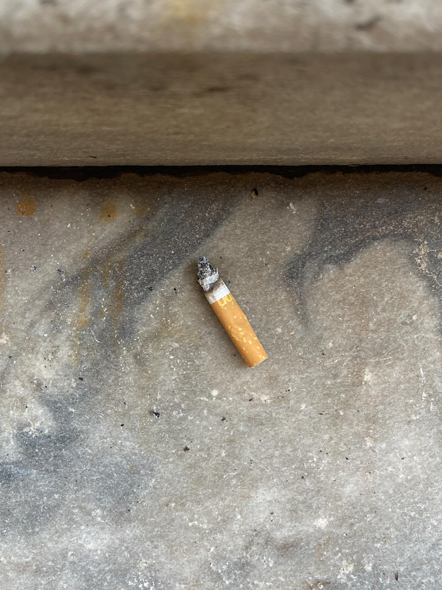

Elias Zobrist
It's just a butt – Lugano, Switzerland
The project aims to raise awareness among smokers who throw butts on the ground. To do this, I decided to photograph as many butts as possible in the streets of Lugano over the course of a day. With this archive you have the opportunity to observe people's indifference to an apparently harmless gesture.
Object
Disassembled object


WEB PLATFORM
Through this site you have the possibility to visualise, with the help of filters and machine learning, all the cigarette butts I managed to photograph in the streets of the major points of interest in Lugano.
FILTERS
For a more targeted content search, I decided to include scattered butts inside the screen to reflect the concept of littering. Hovering over the cigarettes gives you the option to choose the filter you want. There are three types of filters: the cigarette brand, the number of puffs remaining and the place where the butt was thrown.
SHUFFLE
Again reflecting the concept of littering, on the screen I placed a lighter that if clicked will shuffle the displayed content.
NEXT
While viewing a single image, through machine learning, it is possible to advance between images with the gesture of smoking.
PREVIOUS
As in the previous case, through machine learning, you have the ability to switch to the previous image. In this case when the hand is raised.
SORT
In addition to filters, you have the possibility to sort the content according to the amount of puffs remaining in the butts, in two modes: increasing and decreasing.
SEARCH
To simplify the content viewing experience even more, a search function has been added which allows you to search specifically on images.